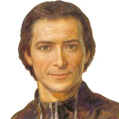
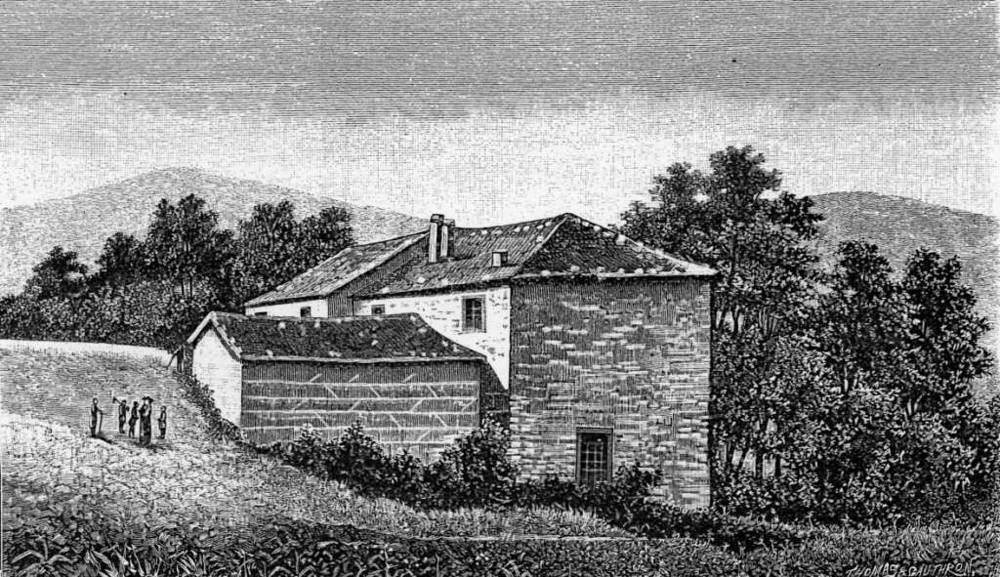

Founder and Apostles
Saint Marcellin
Champagnat
Foundation of the Marist Brothers: Educating generations in the spirit of simplicity, presence, and family spirit.
Biographical Narrative
The Life of St. Marcellin
Early Life and Calling
Marcellin Champagnat was born on May 8, 1789, in Marlhes, a small village in the Loire region of France. From his youth, he showed a strong devotion to the Virgin Mary and a passion for helping young people.
In 1808, he entered the seminary and was ordained a priest in 1816. His early ministry was marked by deep concern for the spiritual needs of poor children who had little access to education or religious instruction.


Foundation of the Marist Brothers
The Beginning - 1817
On January 2, 1817, St. Marcellin Champagnat founded the Marist Brothers in response to his vision for youth education. With only four young men as the first members, he began teaching children in Marlhes, establishing schools for poor and marginalized youth.
The congregation grew rapidly, expanding across France and eventually to other parts of Europe and the world. By the time of Marcellin's death in 1840, the Marist Brothers had established a significant presence in multiple countries.
The Marist Charism
Presence
"Being with the young" - living close to those we serve, understanding their needs, and accompanying them on their journey.
Simplicity
Living modestly and authentically, avoiding ostentation while maintaining dignity and focused commitment to education.
Family Spirit
Creating communities of care, warmth, and mutual support where everyone feels valued and belongs.
Marcellin's Vision
"Good Christians and Upright Citizens" - A holistic approach to formation that remains central to Marist education today.
Good Christians
Development of deep faith, moral integrity, and spiritual growth. Students learn to live gospel values and serve others with compassion and justice.
Upright Citizens
Excellence in education, development of leadership skills, and commitment to social responsibility. Students become engaged members of their communities.
Marcellin's Legacy Today
More than 200 years after the founding of the Marist Brothers, St. Marcellin Champagnat's vision continues to guide our work with young people worldwide. His legacy lives on through:
- Excellence in Catholic education
- Service to marginalized youth
- Formation of character and faith
- Community-centered approach
- Presence with the young
- Simplicity and authenticity
- Family spirit and unity
- Global Marist network
Annual Celebration
May 6th
The feast day of Saint Marcellin Champagnat is celebrated annually on May 6th. This day commemorates his birth and his enduring legacy as the founder of the Marist Brothers.
Across all our communities in East Asia, we celebrate this day with special masses, gatherings, educational activities, and renewed commitment to his vision of serving young people.